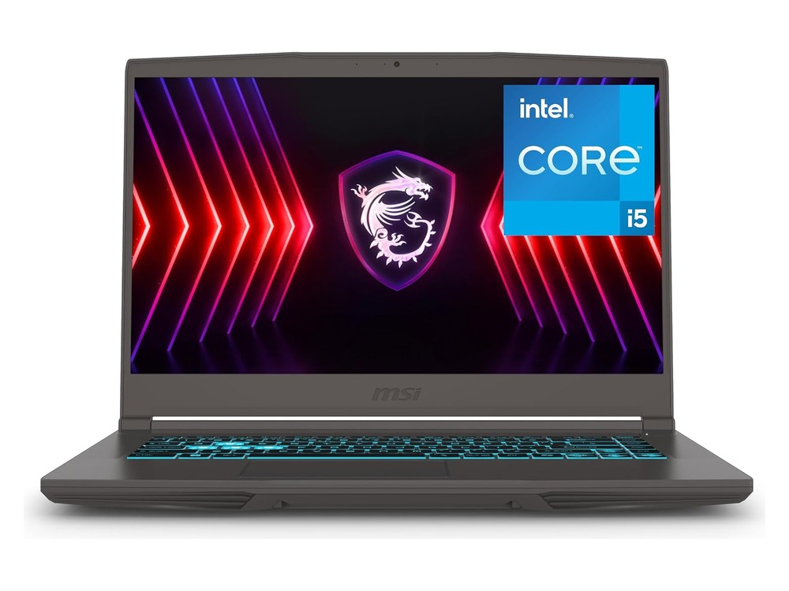

Ficha técnica
| Procesador | Intel Core i5-13420H · 8 núcleos |
|---|---|
| Gráficos | NVIDIA RTX 4050 · 6 GB |
| Memoria | 16 GB DDR4 |
| Almacenamiento | 512 GB SSD |
| Pantalla | 15,6" IPS Full HD · 144 Hz |
| Peso | 1,86 kg |
| Autonomía | Sin dato del fabricante (batería de 52,4 Wh) |
| Sistema operativo | Windows 11 |
| Precio | 1279 € orientativo |
Para quién es
Su mejor baza es el gaming, con 80 de 100. Para moverse se queda en 48 de 100. Pesa 1,86 kg. Cuesta 1279 €, en la mitad de la tabla de precios.
- Encaja si lo que más te importa es jugar con soltura, y el presupuesto llega a 1279 €.
- Busca otra opción si lo que prima es la portabilidad: aquí saca 48 de 100.
Puntos fuertes y débiles
A favor
- Pantalla fluida: 144 Hz.
- Gráfica dedicada: NVIDIA RTX 4050 · 6 GB.
En contra
- Autonomía sin dato: el fabricante no publica las horas.
Dónde comprarlo
El precio cambia a menudo y puede haber varias configuraciones: comprueba procesador, memoria y almacenamiento antes de comprar.
Ver precio actual en AmazonComo afiliado de Amazon, ComparaPortátil obtiene ingresos por las compras adscritas que cumplen los requisitos aplicables. No cambia lo que pagas ni las notas del comparador.
Notas por uso
Escala de 0 a 100. En el comparador se recalculan según el perfil que elijas. La nota global es 68 / 100, la media de los cuatro apartados.
Alternativas por precio
Los tres modelos del catálogo que más se acercan a su precio:
- Microsoft Surface Laptop 7+20 €
- ASUS TUF Gaming A16−30 €
- HP OmniBook 5 14−30 €
Rival directo: ASUS TUF Gaming A16
Es el modelo del catálogo más cercano en precio que también destaca para jugar.
| MSI Thin 15 | ASUS TUF Gaming A16 | |
|---|---|---|
| Precio | 1279 € | 1249 € |
| Peso | 1,86 kg | 2,20 kg |
| Autonomía | Sin dato del fabricante (batería de 52,4 Wh) | 10 h según el fabricante |
| Nota para jugar | 80 / 100 | 91 / 100 |
| Nota global | 68 / 100 | 72 / 100 |
Preguntas frecuentes
¿Sirve el MSI Thin 15 para jugar?
Sí. Saca 80 de 100 para jugar gracias a su NVIDIA RTX 4050 · 6 GB, de las mejores notas del catálogo en este apartado.
¿Cuánto dura la batería del MSI Thin 15?
El fabricante no publica la autonomía; la batería es de 52,4 Wh.
¿Es buena opción para llevarlo a clase o al trabajo cada día?
Se puede: 1,86 kg es un peso normal, aunque al final del día se nota más que en un ultraligero.
Compáralo con otro modelo
Abre el comparador con este portátil ya cargado y enfréntalo a cualquiera de los 34.
Abrir el comparador